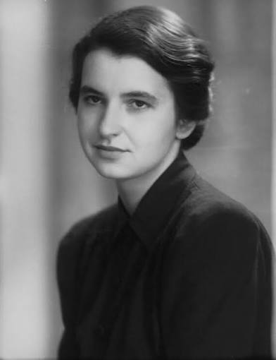
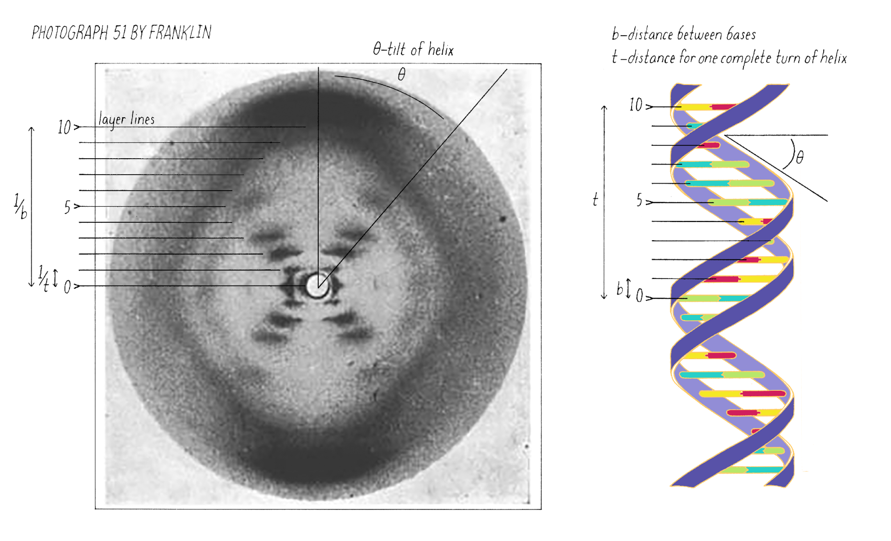
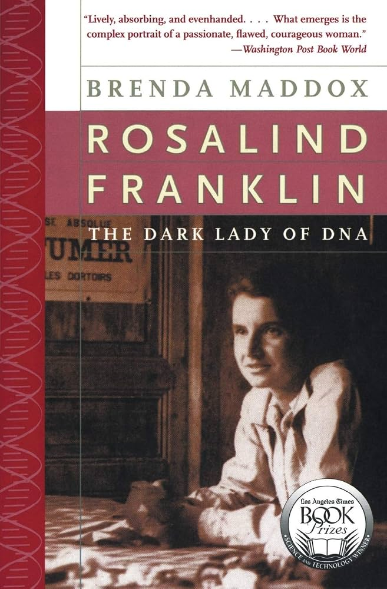

Rosalind Franklin was born on July 25, 1920, in London, England. From a young age she showed a strong interest in science, especially in mathematics and chemistry. Her curiosity and determination led her to pursue higher studies at the University of Cambridge, where she focused on physical chemistry. During her early research years, she developed strong skills in experimental work and scientific observation. These experiences helped shape her career and prepared her for the important discoveries she would later make. Her careful and precise approach to science eventually guided her toward the groundbreaking study of DNA, which became one of the most influential contributions in modern biology.

Rosalind Franklin made one of the most important contributions to modern biology through her work on the structure of DNA. Using X-ray diffraction, she captured extremely detailed images of DNA fibers. Her most famous image, known as Photo 51, revealed the clear pattern of a double helix. Her careful measurements and precise observations provided the essential data that allowed scientists to understand how DNA is built.
Franklin’s research changed the way scientists understood DNA. Her clear X‑ray images helped reveal how genetic information is stored and passed from one generation to the next. Even though she did not receive full credit at the time, her work became a key foundation for modern genetics. Today, her discoveries continue to guide research in biology and medicine, showing how important her careful scientific approach was.


Rosalind Franklin is not as well-known as she should be because much of her work was used by other scientists without giving her full credit. During her research on DNA, she produced the famous Photo 51, which clearly showed the structure of the double helix. This image was shared with James Watson and Francis Crick without her permission, and they used it to build their DNA model. As a result, Watson and Crick received most of the recognition, while Franklin’s important contribution was overlooked for many years. Today, more people understand how essential her work was, and she is finally being honored for her role in the discovery of DNA’s structure.